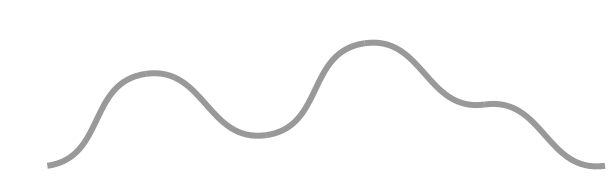

This the is plyllotaxy music generated site
You use phylotaxy music, a web application, for generating a music theme. A music theme is a small suite of music notes, a melodic material.
A wellknown theme is at the start of Bach's 2nd fugue in C minor.
Phylotaxy
Phylotaxy means "shape of leaves". It is the science developped by botanist, mathematicians and physicists to understand why plants have the shape they have.
Those guys have fun jobs.
In the office of Stephane D., a "spiral plants" specialist I visited, the shelves are full of beautiful dried specimen that people sent to him from all over the world. Each plant has spectacular spiral arragenements of leaves that run upward the trunks.
A common spiral plant is the pinecone.
Stephane taught me that when the trunk grows, the cells at the stem divide themselves. New cells end up building the trunk but regularly, one of them differentiates and becomes a leave. Because this happens on a regular tempo, the leaves arrange themselves along the trunk in spiral patterns. Stephane pointed out that if you draw a curve around the trunk to isolate one leave cell from newer leave cells, you end up drawing the "front curve" of the plant growth.
